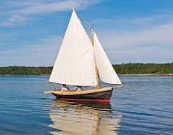

We are a leading provider of marine products and services in Kenya, committed to ensuring the safety and performance of your vessels.

Kenya Marines Supplies Ltd was established in 2005.
We specialize in providing high-quality marine products and services, including boat maintenance, repair, and supply of marine equipment. Our team of experts is dedicated to ensuring the safety and performance of your marine vessels.
We provide a wide range of marine products and services, including boat maintenance, repair, and supply of marine equipment. Our team of experts is dedicated to ensuring the safety and performance of your marine vessels.

Kenya Marines Supplies Ltd is a leading provider of marine products and services in Kenya. We are committed to delivering high-quality solutions to our clients, ensuring their satisfaction and safety on the water.

For more information, please contact us at info@kenyamarinesuppliesltd.com or call us at +254 700 000 000.
© 2024 Kenya Marines Supplies Ltd. All rights reserved.